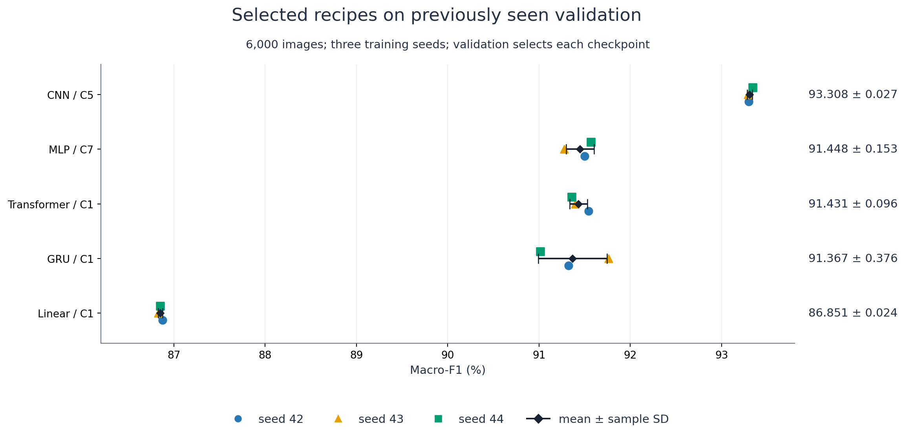

Deep Learning and Its Applications
From pixels to
sequence models.
A comparative study of five PyTorch architectures for Fashion-MNIST. We examine what representation, training recipes and computational cost change—and what the evidence can establish.
Matched follow-up and prospective RGB audit
Thirty paired training fits supply 90 checkpoint evaluations. The primary CNN epoch-60 recipe difference is +0.000912 Macro-F1, positive in one of three seed pairs. A separate locked RGB cohort contains 2,766 crops in 1,826 source/duplicate components; its C4 minus C0 interval includes zero.
- 5
- architecture families
- 61
- completed optimization tasks
- 3
- final training seeds
- A100
- recorded GPU
Assignment 1 · final study
One task.
Five representations.
Flattened pixels, nonlinear features, local convolutions, ordered rows and patch attention share a common image-classification pipeline. A frozen candidate search compares complete training recipes, followed by three-seed fitting of each selected recipe.

The selected CNN records macro-F1 0.93308 ± 0.00027 across three final seeds. These are validation scores, not new blind test results.
Explore the results and their limits →Separate evidence
The original
official-test comparison.
Before the optimization study, five 20-epoch models were selected by validation loss and frozen together. Their official-test scores remain a separate, unchanged comparison.
| Model | Test accuracy | Test macro-F1 | Parameters |
|---|---|---|---|
| Linear | 84.68% | 0.845902 | 7,850 |
| MLP | 88.74% | 0.886994 | 203,530 |
| CNN | 89.59% | 0.895242 | 93,962 |
| GRU | 89.14% | 0.891450 | 61,962 |
| Transformer | 88.94% | 0.888288 | 274,954 |
CNN has the highest observed test score in this single-seed comparison. The later optimization study does not supply a replacement test score.
Real-image extension
GarmentLab.
A separate six-class Fashionpedia extension uses pretrained MobileNetV3-Small. Across three paired seeds, fine-tuning records assessment Macro-F1 0.7747 ± 0.0149, compared with 0.6770 ± 0.0055 for a frozen backbone. Assessment has 327 crops from 221 source groups. The frozen review policy gives 92.54% accepted accuracy at 69.72% coverage, below its empirical 95% calibration target.
Read the real-image results, calibration and export checks →. The extension has its own data, model and release evidence.
The subsequent 20-fit controlled study selected dropout 0.4 (C4) on fresh confirmation seeds. On the reused assessment, its mean Macro-F1 is 0.7664 ± 0.0226, versus 0.7747 ± 0.0149 for the paired C0 anchor; this does not establish a classification gain. A disjoint calibration procedure gives the preset C4 seed314 95.05% accepted accuracy at 55.66% coverage. The statistical risk bound is conditional on assumptions, not a future-accuracy guarantee. The PyTorch CPU demo passes the expanded numerical and service checks. ONNX passes the original 64-case audit but fails the broader 327-crop 1e-4 logit criterion; it remains experimental and is not the primary serving backend.
Read and reproduce
Study materials.
The report develops the method, comparison and error analysis. Source code, configurations and checkpoint reconstruction instructions make the results traceable to the recorded runs.
- Final report →PDF
- Editable LaTeX project →ZIP
- Presentation slides →PowerPoint
- Slides for reading →PDF
- Presentation script in Vietnamese →Source
- Student-run A100 notebook →Notebook
- Reproduction and checkpoint instructions →Guide
- Task evidence and 15 final checkpoints →Source
- Verified results and figure data →JSON
- Matched training and prospective RGB audit →Results
- Matched confirmation notebook →Notebook
- Completed follow-up methods and full tables →Study
- GarmentLab controlled-study notebook and recorded results →Notebook
- GarmentLab methods, reproduction and local service →Guide
Course projects
Assignment index.
- Assignment 1 · Fashion-MNIST study →Final study
- Assignment 1 · M1 archive ↗Repository
- Assignment 2 · Large-scale data and specialized tasks ↗Repository
- Assignment 3 · Multimodal deep learning ↗Repository
Group G-M10
Authors and contributions.
AI usage
AI assisted LaTeX writing and pipeline development. The disclosure.